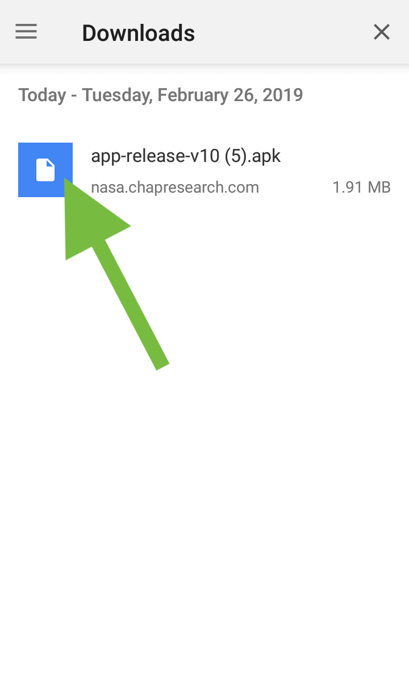

Instructions for downloading Controller
*Only for phones that run Anroid*
*If you have another version of the Controller already installed, remove it before installing again.*
- Bring up nasa.chapresearch.com on the android phone you want to download the Controller App on.
- Tap on the "Android App" button
- Tap "Download" on the pop up message
- If you've already allowed installations from unknown sources in your settings, jump to step 7. If not, then go to your settings.
- In "Lock Screen and Security" tap on the "Unknown Sources" switch.
- Confirm this action by tapping on the "OK" button.
- Tap on the ".apk" file that you just downloaded. (Some phones will open the file automatically, so this step wouldn't be necessary in that case) 
- Tap on the install button, if it does not work, make sure you are using an android phone, and that you don't already have a version of the Controller App.